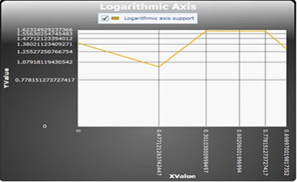

Essential Chart Silverlight now allows you to add logarithmic values for chart Silverlight.
Adding Logarithmic Values for Chart Silverlight
Add logarithmic values for chart Silverlight, by using the following code.
|
[XAML]
<syncfusion:ChartArea.PrimaryAxis> <syncfusion:ChartAxis IsAutoSetRange="True" IsLogarithmic="True" IsLogarithmicLabels="True" LogarithmicBase="10"/> </syncfusion:ChartArea.PrimaryAxis>
<syncfusion:ChartArea.SecondaryAxis> <syncfusion:ChartAxis IsAutoSetRange="True" IsLogarithmic="True" IsLogarithmicLabels="True" LogarithmicBase="10"/> </syncfusion:ChartArea.SecondaryAxis> |
|
[C#]
MyChart.Areas[0].PrimaryAxis.IsLogarithmic = true; MyChart.Areas[0].PrimaryAxis.LogarithmicBase = Math.E; MyChart.Areas[0].PrimaryAxis.IsLogarithmicLabels = true;
MyChart.Areas[0].SecondaryAxis.IsLogarithmic = true; MyChart.Areas[0].SecondaryAxis.LogarithmicBase = 10; MyChart.Areas[0].SecondaryAxis.IsLogarithmicLabels = true; |
When the code runs, the following output displays.

Figure 106: Logarithmic Values
The following table contains the property details of the table.
|
Name of the Property |
Description |
Type of Property |
Value It Returns |
|
IsLogarithmic |
Checks the logarithmic is set or not. |
Dependency Property |
Bool |
|
LogarithmicBase |
Gets the base for the Logarithm. |
Dependency Property |
Double |
|
IsLogarithmicLabels |
Check the logarithmic labels need to be added. |
Dependency Property |
Bool |